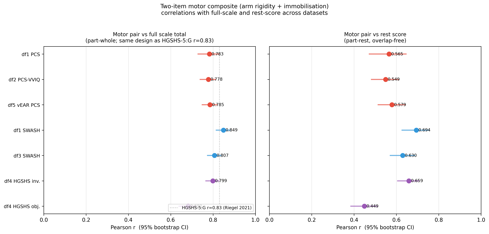
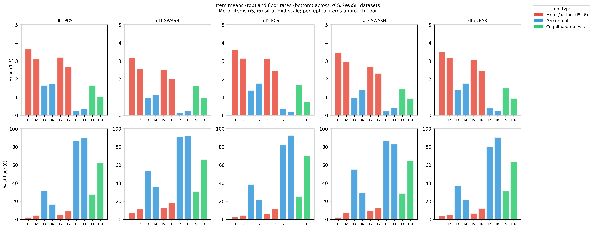
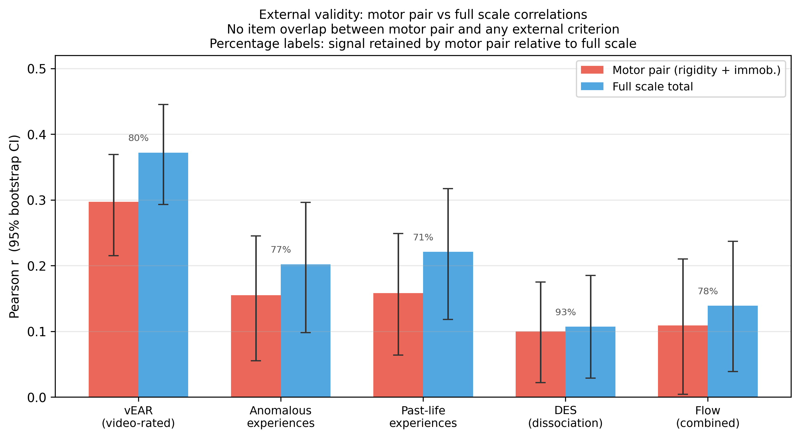
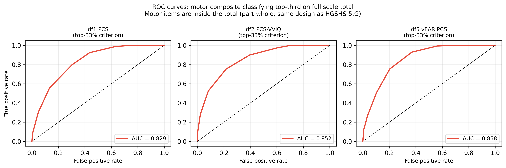
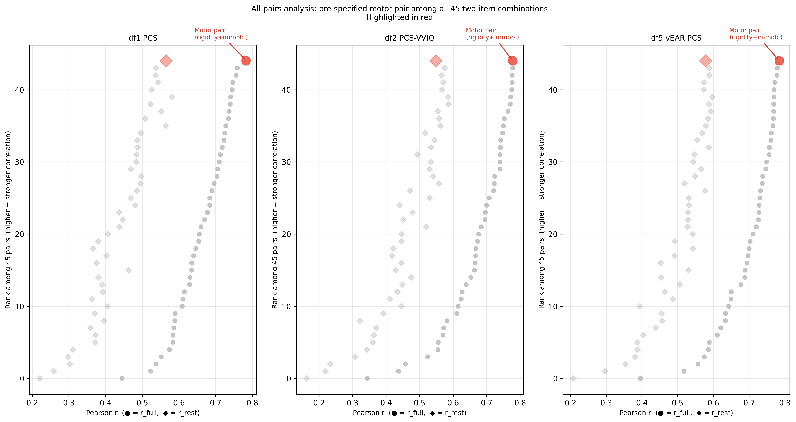

A plain-language walkthrough of what was done, what was found, and what it means
Full hypnotic suggestibility or phenomenological-control assessment is often too time-consuming for screening, online intake, or classroom contexts — especially when it requires a multi-item procedure, structured instructions or induction, and item-by-item ratings.
This project asks whether two items from that scale can do most of the work on their own:
Both are motor challenge items. The participant tries to move their arm and finds they can't. They are mid-difficulty, high-variance items where response failure is behaviorally observable rather than purely self-reported, making them strong candidates for carrying between-person discrimination.
The goal is not to replace full scales, but to evaluate whether these two high-discrimination items can support first-pass screening when full administration is infeasible. All analyses treat the motor items as extracted from full-scale administrations — the results validate an embedded two-item proxy, not a standalone instrument.
The specific claim: the sum of these two items correlates with the full-scale total closely enough to serve as a first-pass screener in unselected student samples, and retains much of the full scale's modest external signal on the nonzero criteria examined here.
PCS and SWASH use closely matched ten-item suggestion sets derived from the Stanford/Waterloo tradition. HGSHS:A is a related group suggestibility scale from the Stanford/Harvard tradition with overlapping motor-challenge items but non-identical content, administration, and scoring. The three scales are analysed separately throughout.
No hypnosis — participants are told it's a test of "the use of imagination to create experiences." Ten items, each rated 0–5 for intensity (0 = nothing, 5 = as vivid as real). This is the primary scale for this analysis.
Items 5 and 6 are the motor pair. The remaining eight: hand lowering (1), moving hands together (2), mosquito hallucination (3), taste hallucination (4), music hallucination (7), negative visual hallucination (8), amnesia (9), post-hypnotic suggestion (10).
Identical items and scoring to the PCS, administered with a full hypnotic induction. Included as a comparison context.
A 1962 scale measuring involuntariness rather than intensity: participants rate whether each suggestion felt voluntary or automatic (0–5). Analysed separately — never combined with the intensity datasets.
Two items have composite scoring:
sqrt(urge × amnesia). If either component is zero, the score is zero.The total is the mean of exactly 10 item scores.
| ID | Scale | Context | N | Notes |
|---|---|---|---|---|
| df1 PCS | PCS PCS | Non-hypnotic | 244 | PCS norms study. Split from df1 SWASH by Condition=0. 6 excluded. |
| df2 PCS-VVIQ | PCS PCS | Non-hypnotic | 508 | PCS + visual imagery questionnaire. Total computed from raw items. |
| df5 vEAR PCS | PCS PCS | Non-hypnotic | 452 | vEAR study with external criterion (visual experience from sound). 62 excluded. |
| df1 SWASH | SWASH SWASH | Hypnotic | 240 | Same file as df1 PCS. Condition=1. Comparison context. |
| df3 SWASH | SWASH SWASH | Hypnotic | 418 | Original SWASH validation paper. 66 participants have retest data. |
| df4 HGSHS:A | HGSHS:A HGSHS | Hypnotic | 584 | Terhune/Reshetnikov. Involuntariness + objective binary. 18 excluded. |
Three OSF datasets (anomalous experiences, flow, dissociation; n = 497–559) contain individual PCS item ratings and serve as external criteria.
Eight Python scripts produce all tables and figures from the raw data files. Each depends only on the shared data module — nothing is scored in two places.
| Script | What it computes | Output |
|---|---|---|
lib_data.py | Data loading, canonical scoring, constants | library only |
a01_descriptives.py | Per-item mean, SD, floor/ceiling rates | table_item_descriptives.csv |
a02_convergence.py | Motor pair vs full scale and vs rest score, with bootstrap CIs | table_main_convergence.csv |
a03_retest.py | Test-retest correlations (PCS norms retest file; df3 retest total) | table_test_retest.csv |
a04_classification.py | Weighted kappa, three ordered tertile groups; supplementary AUC | table_classification.csv |
a05_all_pairs.py | All 45 two-item combinations per dataset, ranked | table_all_pairs.csv |
a06_external.py | Motor pair vs full scale predicting vEAR, anomalous experiences, flow, dissociation | table_external_validity.csv |
a07_sensitivity.py | Scoring variants and listwise deletion checks | table_sensitivity.csv |
a08_figures.py | Forest plot, all-pairs rank, floor chart, ROC curves, external validity chart | figures/*.png |
Pearson r ranges from −1 to +1. r = 0: no relationship. r = 1: perfect lockstep. r² is shared variance — r = 0.78 means 61% of the variance in one score is accounted for by the other. In psychology, r = 0.50 is considered a large effect.
The two-item motor composite correlates r = 0.78–0.79 with the full PCS total across three independent datasets (R² = 0.61–0.62). The motor items are inside the total — this inflates the number slightly, as in all short-form papers. The overlap-free companion — motor pair against the remaining eight items only — is r = 0.55–0.58.
| Dataset | N | Motor vs full total (r) | R² | 95% CI | Motor vs rest score (r) | 95% CI | Reliability (SB) |
|---|---|---|---|---|---|---|---|
| df1 PCS | 244 | 0.783 | 0.61 | [0.729, 0.829] | 0.565 | [0.472, 0.646] | 0.61 |
| df2 PCS-VVIQ | 508 | 0.778 | 0.61 | [0.739, 0.811] | 0.549 | [0.482, 0.610] | 0.63 |
| df5 vEAR PCS | 452 | 0.785 | 0.62 | [0.749, 0.820] | 0.579 | [0.514, 0.642] | 0.62 |
| df1 SWASH | 240 | 0.849 | 0.72 | [0.815, 0.880] | 0.694 | [0.627, 0.753] | 0.79 |
| df3 SWASH | 418 | 0.807 | 0.65 | [0.774, 0.838] | 0.630 | [0.571, 0.687] | 0.75 |
| df4 HGSHS involuntariness | 584 | 0.799 | 0.64 | [0.766, 0.827] | 0.659 | [0.606, 0.705] | 0.70 |
| df4 HGSHS objective | 584 | 0.682 | 0.46 | [0.639, 0.721] | 0.449 | [0.385, 0.511] | 0.42 |
All correlations: p < .001. CIs are 95% bootstrap (nboot = 2000).
The PCS results are tight across three cohorts. The HGSHS:A objective score is weaker because binary pass/fail scoring discards within-item variation. Spearman-Brown reliability (2r / (1+r), where r is the inter-item correlation) is the correct reliability coefficient for a two-item scale; for PCS it is 0.61–0.63.
SWASH (hypnotic context) shows systematically higher coupling than PCS (non-hypnotic) at every comparison: rest-score r 0.63–0.69 vs 0.55–0.58, weighted κ 0.65–0.66 vs 0.50–0.55. The structure replicates across contexts — that is the cross-context finding — but the magnitude of motor-item concentration is higher under induction. These are not equivalent results combined under one headline.
The df1 dataset randomly assigned participants to PCS or SWASH conditions, making it the cleanest test. Fisher's r-to-z comparison of df1 PCS vs df1 SWASH is statistically significant for both r_full (z = −2.18, p = .029) and r_rest (z = −2.36, p = .018), confirming the SWASH magnitude difference is not sampling noise. Cross-dataset comparisons (df2 PCS vs df3 SWASH; df5 PCS vs df3 SWASH) are not significant (z = −1.18, p = .239; z = −0.88, p = .377), consistent with between-cohort variability dominating over any context effect in those pairs.

A 0–5 scale item where 87% of participants score zero contributes almost nothing to the total's ability to sort people. It doesn't discriminate because everyone fails it. The PCS total is dominated by items where people actually vary — and several items are near-universally failed in unselected student samples.
| Item | df1 PCS | df2 PCS-VVIQ | df5 vEAR PCS | Mean (all datasets) |
|---|---|---|---|---|
| Music hallucination | 86.5% at zero | 81.7% at zero | 79.6% at zero | 0.14–0.39 / 5 |
| Neg. visual hallucination | 90.2% at zero | 92.7% at zero | 90.5% at zero | 0.20–0.43 / 5 |
| Post-hypnotic suggestion | 62.7% at zero | 69.7% at zero | 63.7% at zero | — |
| Arm rigidity MOTOR | mean 3.20 (floor 5%) | mean 3.12 (floor 7%) | mean 3.07 (floor 7%) | PCS 3.07–3.20; SWASH 2.50–2.67 — mid-scale |
| Arm immobilisation MOTOR | mean 2.68 (floor 9%) | mean 2.45 (floor 12%) | mean 2.47 (floor 12%) | PCS 2.45–2.68; SWASH 2.01–2.31 — mid-scale |
The motor items sit near the middle of the scale — the optimal position for sorting people. Music and negative visual hallucination sit near zero for 80–93% of participants. When most of the scale is near-uniformly zero, the total is largely determined by the few items that actually vary. The high correlation between the motor pair and the total is partly structural: removing near-zero items from the total costs almost nothing, because they weren't carrying information anyway.
The item difficulty distribution likely helps explain why the motor pair works as a proxy in unselected samples: the motor items retain substantial between-person variance, whereas several perceptual-cognitive items are near floor and contribute less to rank-ordering. This is an explanation for the screening correlation, not a critique of it.

Correlating the motor pair against the full PCS total involves shared items on both sides. The cleanest test is external criteria — measures with no item overlap with the PCS at all.
If the motor pair is a useful proxy for suggestibility-related response tendency rather than just for the parent items it came from, it should predict external outcomes at roughly the same level as the full scale does.
| External criterion | N | Motor pair r | Rest score r | Full PCS r | % of full-scale r retained |
|---|---|---|---|---|---|
| vEAR (visual experience from sound) | 452 | 0.297 | 0.354 | 0.372 | 80% |
| Anomalous experiences (combined) | 497 | 0.155 | 0.189 | 0.202 | 77% |
| Past-life experiences | 497 | 0.158 | 0.214 | 0.221 | 71% |
| Flow states (combined) | 432 | 0.109 | 0.131 | 0.139 | 78% |
| Dissociation (DES) | 559 | 0.100 | 0.092 | 0.107 | 93%† |
† DES: both correlations are near-zero (r = 0.10 and 0.107). The 93% figure reflects two near-null effects agreeing, not a meaningful retention of signal. The r-ratio is uninformative when the base correlation is this small.
The rest-score column shows how the full scale performs once motor items are removed. For vEAR the rest score (r = 0.354) sits between the motor pair (0.297) and the full scale (0.372), consistent with the motor pair and the remaining eight items both contributing independent signal to the PCS total's predictive validity. For anomalous experiences the rest score (0.189) slightly exceeds the motor pair (0.155), again showing independent contributions. The motor pair does not capture all the external signal in the scale, but it captures the majority of it.
Retention percentages are motor r / full-scale r, not R² ratios. For vEAR in variance terms: approximately 64% retained (R² = 0.088 / 0.138).
The meaningful external evidence is vEAR and the anomalous-experience criteria, where both correlations are nonzero and the motor pair tracks the full scale at 71–80% of its predictive strength. Neither the motor pair nor the full scale shares any items with these criteria — this is not a mathematical artefact of shared items.

Correlation measures consistent ranking. Classification asks whether those rankings translate into correct categorical decisions: if you label someone high, medium, or low on two items, how often is that label right?
Participants are split into three ordered groups — low, medium, high — at tertile boundaries (the 33rd and 67th percentiles). Agreement is measured by weighted Cohen's kappa, which penalises adjacent-category errors less than cross-extreme errors. This three-group, linear-weighted design is standard for ordinal short-form evaluation.
Kappa corrects raw agreement for chance. Kappa = 0: no better than random. Kappa = 1: perfect. Standard interpretation (Landis & Koch): <0.20 slight / 0.21–0.40 fair / 0.41–0.60 moderate / 0.61–0.80 substantial. The DSM-5 field trials considered κ = 0.40–0.60 "a realistic goal" and κ = 0.60–0.80 "cause for celebration."
The motor pair and the full-scale total share items, replicating the standard short-form design used in the published literature.
| Dataset | N | κ weighted | κ unweighted | AUC (top third) | Landis & Koch |
|---|---|---|---|---|---|
| df1 PCS | 244 | 0.548 | 0.446 | 0.829 | Moderate |
| df2 PCS-VVIQ | 508 | 0.504 | 0.400 | 0.852 | Moderate |
| df5 vEAR PCS | 452 | 0.522 | 0.410 | 0.858 | Moderate |
| df1 SWASH | 240 | 0.657 | 0.550 | 0.905 | Substantial |
| df3 SWASH | 418 | 0.652 | 0.547 | 0.896 | Substantial |
| df4 HGSHS:A involuntariness | 584 | 0.651 | 0.563 | 0.893 | Substantial |
| df4 HGSHS:A objective† | 584 | 0.554 | 0.459 | 0.841 | Moderate |
† Objective motor items are binary (0/1); motor sum ranges 0–2 only. Tertile cut points fall at 0 and 1, making this classification coarser than the involuntariness or intensity analyses.
Weighted kappa tracks the context pattern seen in the convergence analyses. PCS (non-hypnotic, continuous items) returns κ = 0.50–0.55 (moderate). SWASH and HGSHS:A involuntariness — both administered under induction — reach κ = 0.65 (substantial), consistent with the higher motor-item coupling under those conditions. The objective HGSHS:A result (κ = 0.554) comes from a binary motor composite with only three possible values (0, 1, 2); the tertile boundaries fall at integers, so this figure carries more classification noise than the continuous-item analyses. Overlap-free figures are reported in the Conservative section below. Both analyses are required: the primary is directly comparable to the HGSHS-5:G benchmark (κ = 0.578); the conservative removes shared-item agreement entirely. The motor pair is better treated as an ordinal triage tool than as a precise high-responder detector.
The motor sum has 11 possible values (0–10). Tertile boundaries often fall on integer values where many participants tie, and tie-handling shifts borderline cases between groups. We use a strict "greater than" rule throughout and report the score distribution alongside kappa.

We also classify against the rest score — the mean of the eight non-motor items — so screen and criterion share no items at all. This is stricter than the standard short-form design, where the abbreviated scale's items are inside the criterion.
| Dataset | N | κ weighted (rest score) | κ unweighted | Landis & Koch |
|---|---|---|---|---|
| df1 PCS | 244 | 0.325 | 0.262 | Fair |
| df2 PCS-VVIQ | 508 | 0.294 | 0.203 | Fair |
| df5 vEAR PCS | 452 | 0.335 | 0.240 | Fair |
| df1 SWASH | 240 | 0.459 | 0.355 | Moderate |
| df3 SWASH | 418 | 0.448 | 0.363 | Moderate |
| df4 HGSHS:A involuntariness | 584 | 0.522 | 0.442 | Moderate |
| df4 HGSHS:A objective | 584 | 0.347 | 0.267 | Fair |
The overlap-free κ follows the same context gradient as the primary analysis: PCS 0.29–0.34 (fair), SWASH 0.45–0.46 (moderate), HGSHS:A involuntariness 0.52 (moderate). The gap between primary and conservative figures in each row reflects the portion of agreement attributable to shared items. External validity (§7) carries the screening claim in fully criterion-free terms.
Maybe any two medium-difficulty items would correlate as highly with the total, making the motor pair unremarkable. We tested this by computing the part-whole correlation for all C(10,2) = 45 possible two-item combinations per dataset.
| Dataset | r_full rank / 45 | r_rest rank / 45 | Motor r_full | Motor r_rest | Top pair (r_full) | Top r_full |
|---|---|---|---|---|---|---|
| df1 PCS | #1 | #2 | 0.783 | 0.565 | Arm rigidity + Arm immobilisation | 0.783 |
| df2 PCS-VVIQ | #2 | #11 | 0.778 | 0.549 | Hand lowering + Arm immobilisation | 0.778 (tied) |
| df5 vEAR PCS | #1 | #9 | 0.785 | 0.579 | Arm rigidity + Arm immobilisation | 0.785 |
| df1 SWASH | #4 | #8 | 0.849 | 0.694 | Hand lowering + Arm rigidity | 0.856 |
| df3 SWASH | #13 | #23 | 0.807 | 0.630 | Taste + Arm rigidity | 0.845 |
Two rank columns matter here. By r_full (part-whole, motor items inside the total) the motor pair is #1 or #2 in all three PCS datasets and #4 in df1 SWASH. By r_rest (overlap-free) the picture is weaker: the motor pair drops to #2 (df1 PCS), #9 (df5 vEAR), #11 (df2 PCS-VVIQ), #8 (df1 SWASH), and #23 (df3 SWASH). The r_full dominance is partly structural — items that correlate well with the scale they came from will naturally rank high when scored against that scale. The r_rest ranking is the honest test of pair efficiency and shows the motor combination is not uniquely dominant once overlap is removed.
The consistent cross-dataset finding is narrower than "motor pair ranks first everywhere": a motor item appears in or near the top pair by r_full in every dataset, and perceptual items (music, negative visual hallucination) never do — their floor effects suppress variance regardless of pairing. The motor pair's advantage is real on the part-whole metric and approximately holds on the part-rest metric for df1 PCS; it does not hold as strongly across datasets once overlap is removed.

The proper test of the two-item composite's temporal stability would be a standalone administration — give just the two items, retest, measure agreement. That data doesn't exist. What we have is the motor pair's stability extracted from full-scale retest datasets, where participants completed all ten items at both sessions.
| Comparison | N | r | p |
|---|---|---|---|
| PCS motor pair T1 → motor pair T2 | 61 | 0.338 | .008 |
| PCS motor pair T1 → rest score T2 | 61 | 0.222 | .086 (ns) |
| PCS full scale T1 → full scale T2 | 61 | 0.523 | <.001 |
| SWASH motor pair T1 → motor pair T2 | 62 | 0.497 | <.001 |
| SWASH motor pair T1 → rest score T2 | 62 | 0.460 | <.001 |
| SWASH full scale T1 → full scale T2 | 62 | 0.560 | <.001 |
| SWASH motor pair T1 → full scale T2 (df3) | 66 | 0.694 | <.001 |
These numbers should not be over-read. The surrounding items, induction procedure, and administration context are all present at both sessions — this is stability within the full-scale procedure, not screener-specific stability. Whether the motor pair administered alone would show similar, better, or worse temporal consistency is an open question.
Two rows in the PCS block are diagnostic. The motor pair T1 → motor pair T2 correlation (0.338) sits at roughly single-item level rather than gaining from combining two items. More revealing: PCS motor pair T1 → rest score T2 is r = 0.222, p = .086 — not significant, meaning the PCS motor pair at session 1 does not reliably predict the non-motor scale score at session 2. The SWASH equivalent (motor T1 → rest T2: r = 0.460, p < .001) is substantially stronger, consistent with the higher motor-item coupling found under induction. The rest-score rtt itself is higher than the full-scale rtt in the PCS block (0.567 vs 0.523), which is unusual and reflects the relatively poor stability of the floor items when aggregated into the full scale.
Some descriptive context from per-item rtt across all ten PCS items: single items average rtt ≈ 0.37, so the motor pair composite (0.338) sits at roughly single-item level rather than gaining much from combining two items. The full scale's advantage (0.523) is aggregation across ten items. Mid-difficulty items are the most stable individually — mosquito rtt = 0.50, taste rtt = 0.45. Floor items produce uninterpretable estimates: music hallucination rtt = +0.645 in PCS but −0.013 in SWASH on the identical item, a sign flip driven by too few non-zero scores to anchor the correlation. Arm rigidity has 26% ceiling compression in this retest subsample, which explains its low single-item rtt (0.22); arm immobilisation is mid-range and returns 0.41.
The main results are stable across scoring variations. Sum vs mean, z-scored items, and listwise deletion all leave the correlations unchanged. Two bug-check rows confirm the scoring corrections made to df2 and df3.
| Check | Variant | df1 PCS n=244 |
df2 PCS-VVIQ n=508 |
df3 SWASH n=418 |
df5 vEAR PCS n=452 |
|---|---|---|---|---|---|
| Scoring (r_full) | Motor sum vs total | 0.783 | 0.778 | 0.807 | 0.785 |
| Motor mean vs total | 0.783 | 0.778 | 0.807 | 0.785 | |
| Z-scored (r_full) | Motor z vs total z | 0.783 | 0.778 | 0.807 | 0.785 |
| Listwise deletion (r_full) | Motor sum vs total | 0.783 | 0.778 | 0.807 | 0.785 |
| Scoring (r_rest) | Motor sum vs rest | 0.565 | 0.549 | 0.630 | 0.579 |
| Motor mean vs rest | 0.565 | 0.549 | 0.630 | 0.579 |
Against external criteria with no item overlap — vEAR and anomalous experiences — the motor pair retains 71–80% of the full PCS's predictive signal. Both the motor pair and the full scale correlate at similarly modest levels with these criteria, and the motor pair tracks nearly as well. This is the evidence that survives the circularity objection: the motor pair is not just predicting the items it came from.
Within-scale: the motor pair correlates r = 0.78–0.79 with the full PCS total across three independent cohorts (part-whole, motor items inside the total; R² = 0.61–0.62). The overlap-free companion — motor pair against the remaining eight items — is r = 0.55–0.58. The high part-whole r is partly structural: music and negative visual hallucination approach floor in unselected samples, so removing them from the total loses almost no information.
Classification weighted kappa is 0.50–0.55 (overlapping design, comparable to other published short forms) and 0.29–0.34 (overlap-free). Both are reported; neither should stand alone. The motor pair is an ordinal triage tool — it narrows the candidate pool, not a precision classifier. The all-pairs analysis shows motor items are specifically efficient across PCS datasets; the claim is weaker (though still holds) in SWASH.
| Limitation | What it constrains |
|---|---|
| Part-whole overlap | The motor items are inside the full-scale total. r = 0.78–0.79 is upwardly biased. The overlap-free figure (r = 0.55–0.58 vs rest score) is the conservative complement. |
| Embedded administration only | The motor pair was always given inside the full ten-item scale. Standalone administration may produce different response patterns. |
| Floor effects are sample-dependent | High proxy correlations depend on music and neg. visual hallucination being near floor. In enriched samples (pre-selected high responders), those items vary more and the proxy weakens. |
| Test-retest stability | Motor pair embedded rtt = 0.338 (n = 61, PCS), consistent with single-item level — no aggregation gain. Standalone retest data does not exist. Current evidence supports cautious one-off screening only, not repeated measurement. |
| No external criterion for most datasets | Most convergence evidence is motor pair vs parent scale (or vs rest score). Only df5 and the three OSF datasets provide external criteria. This supports "candidate proxy/screener," but not a fully validated standalone screener. |
| HGSHS:A measures a different dimension | Involuntariness ≠ intensity. df4 is convergent evidence across measurement frameworks, not the same construct measured three ways. |
| Secondary re-analysis | All analyses are secondary re-analyses of existing datasets. Results are hypotheses for prospective confirmation. |